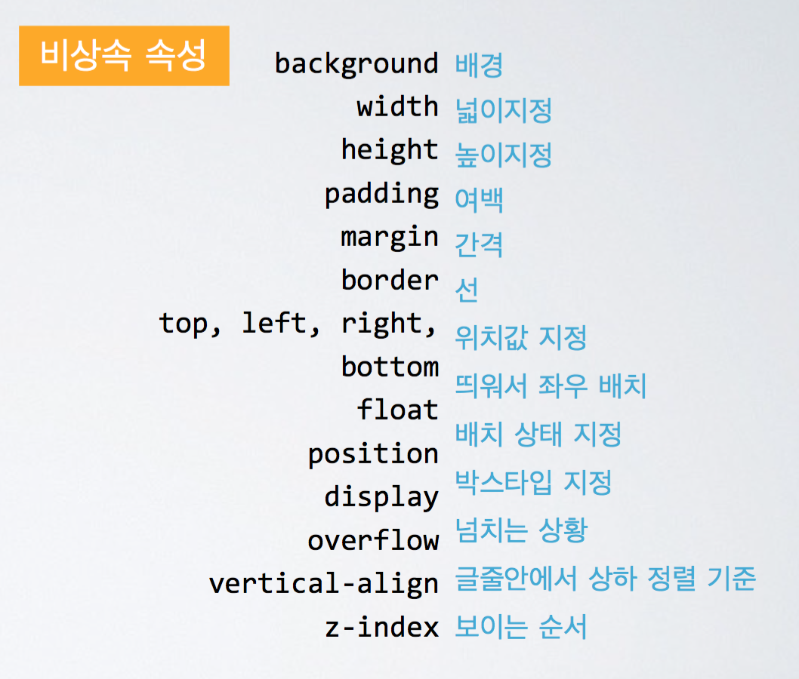
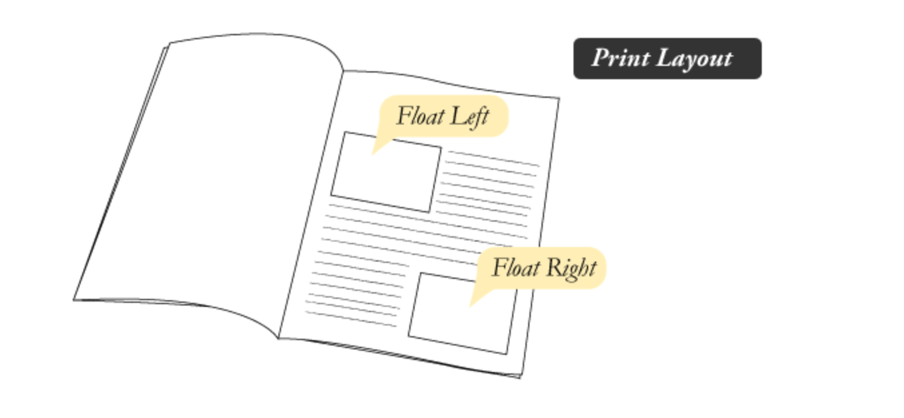
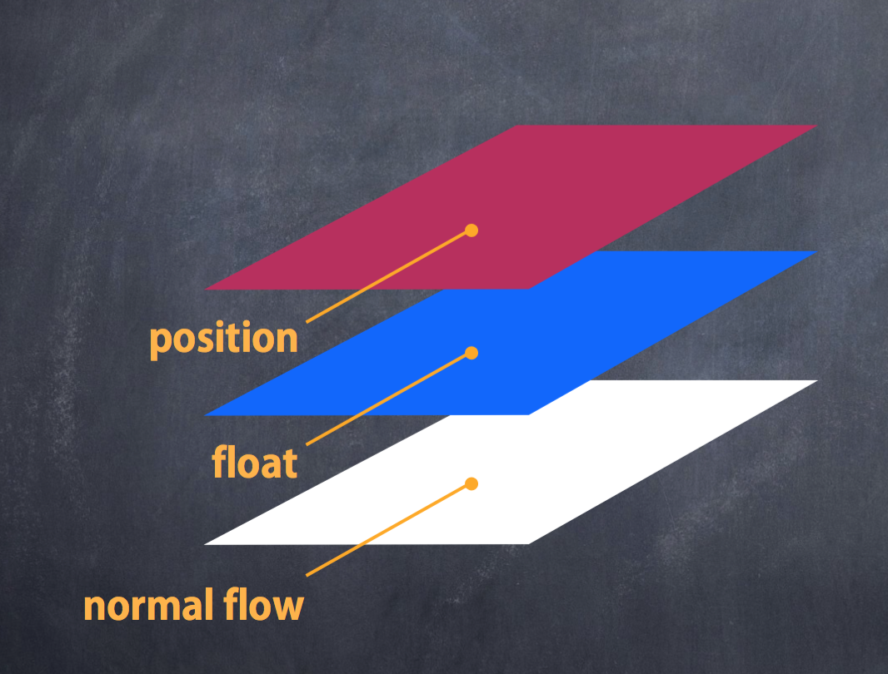
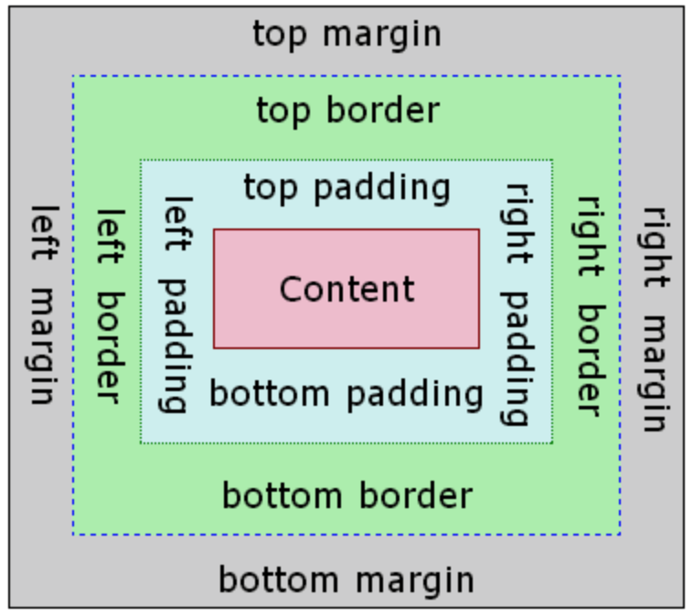
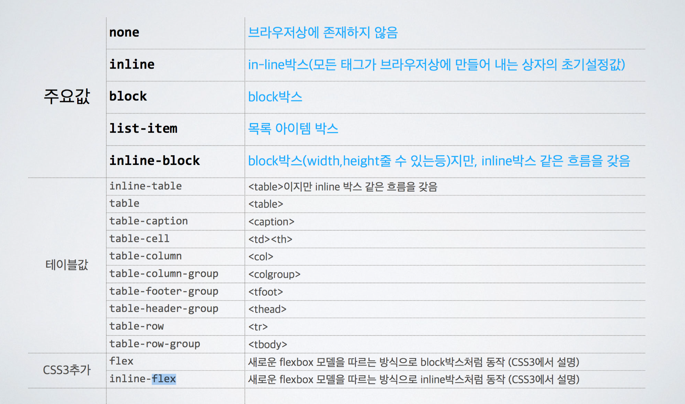

컨텐츠
1. CSS의 탄생
처음엔 논문 서류양식으로 시작했지만 시대가 지나면서 디자인에 대한 니즈가 점점 커져갔죠. 그래서 처음에는 의미만 부여하는 html이었지만 곧 디자인을 건들기 시작했어요. (<i>, <b>, <hr> 와 같은 태그들)
하지만 그것이 HTML를 지저분하게 만들기 시작했고, 이를 보완하기 위해 CSS가 탄생했습니다.(1996년) CSS는 부모의 속성에 자식이 영향을 받습니다. (Cascading Style Sheet) —> 폭포처럼 부모의 속성이 아래로 떨어져요.
**다만 상속받지 않는 값들도 있습니다.(외우실 필요는 없어요!ㅋ)
2. CSS를 적용하는 법
-
요소안에 style=“ ” 표시 (html4까지 적용. html5에서는 쓰지 말기)
<li><a href="#" style ="background: red">로그인</a></li> -
html내부에 스타일 태그로 표시
<style> p{ background: red; } </style> -
외부 스타일시트 가져오기
<link rel="stylesheet" type="text/css" href="../css/style.css">참고로 HTML5 부터 type 속성은 생략하셔도 좋습니다.- *외부 스타일시트의 장점*
-
다운받는 스타일시트의 숫자감소 —> 성능이 향상됩니다.
-
페이지들이 동일한 스타일을 공유하면서 코드의 양이 줄어들고 페이지가 간결해집니다.
-
유지, 보수가 간편합니다.
3. CSS 선언하기
selector(선택자) { --> 선택자 부분
property(속성명) : value(속성값); --> 선언 부분(세미콜론으로 구분해줍니다.)
}
body{
margin-right: 10px;
padding-bottom: 23px;
}
4. 셀렉터(선택자) 사용하기
셀렉터는 HTML에 CSS를 연결해주는 역할을 합니다.
-
요소명 { } : 요소 셀렉터
—> 요소를 싸잡아서 한꺼번에 효과를 줄때는 좋지만, 요소를 디테일하게 선택하기에는 불편합니다.
-
.클래스명 { } : 클래스 셀렉터
—> 특정클래스를 가진 요소에만 CSS를 부여합니다. 숫자, 특수문자로 시작하지 말 것. 오작동 가능성이 있습니다.
-
#아이디 { } : 아이디 셀렉터
—> 특정 아이디를 가진 요소에만 CSS를 부여합니다. 아이디는 한 사이트에 한 개만 사용할 수 있습니다.(즉, 중요도가 높습니다) HTML을 만들면서 요소를 강조하고 싶을 때, 혹은 반드시 페이지에 하나만 존재 해야 하는 이름일 때 아이디값을 써주는 편입니다.
-
A B { } : 자식 셀렉터
—> A요소의 자식 요소인 B요소에 CSS를 부여합니다.
-
A > B { } : 직계 자식 셀렉터
—> A요소의 직계자식 요소인 B요소에만 CSS를 부여합니다. 위의 자식 셀렉터보다 우선 순위가 높으며 이때 ‘직계’ 란, 한 단계 아래의 요소만을 말합니다.
-
.A, .B { } : 컴마를 이용한 셀렉터
—> 컴마를 기준으로 나눠진 클래스를 전부 찾습니다.
유사 요소(가상의 요소)를 선택하는 셀렉터
유사 요소란 HTML문서에 나와있지 않는 요소(pseudo-class)를 말합니다.
-
:hover { }
—> 마우스를 올렸을 때. 해당 요소에 CSS를 부여합니다.
-
:active { }
—> 특정요소를 클릭하고 있을 때 CSS를 부여합니다.
-
:focus { }
—> 특정요소를 포커스했을 때 CSS를 부여합니다.
-
:link { }
—> 특정 요소를 링크하고 있을 때 CSS를 부여합니다. a요소의 기본 값입니다.
-
:visited { }
—> 링크된 요소가 이미 클릭되었을 때 CSS를 부여합니다.
-
:first-child { } : 첫번째 자식 셀렉터 (IE7부터 지원)
—> 해당 그룹의 첫번째 자식에게 CSS를 부여합니다.
-
:last-child { } : 마지막 자식 셀렉터 (IE 9부터 지원)
—> 해당 그룹의 마지막 자식에게 CSS를 부여합니다.
-
:nth-child(숫자) { } : 중간 자식 셀렉터 (IE 10부터 지원)
—> 해당그룹의 숫자 순서에 해당하는 자식에게 CSS를 부여합니다. 괄호안에는 숫자뿐 아니라 ’n’ 을 이용해 짝수 번째, 홀수 번째 요소로 만들어 줄 수도 있습니다.(2n, even, 2n - 1, odd)
-
:before { }, :after { }
—> 해당 요소의 가장 앞과 뒷부분에 가상의 요소를 만들어 CSS를 부여합니다. 기본적으로 inline 요소입니다.
셀렉터 사용시 유의할 점 셀렉터를 작성할 때는 되도록 깊이를 짧게 쓰는게 성능상의 이점이 있습니다. **스타일속성적용 우선순위**
기본적으로는 코드 작성 순서대로. !important —> 요소style —> id —> class, 추상클래스 —> 태그 —> 상속받은 속성으로 우선순위가 결정됩니다.
5. float 다루기
처음부터 웹은 ‘문서’였습니다. 처음 개발할 당시에는 레이아웃을 만든다는건 생각을 못했죠. 그래서 탄생한것이 ‘float’입니다! (99년도에 개념이 나오고, 2007년부터 사용 되기 시작했습니다.)
float의 속성
사실 웹은 2차원이 아니라 3차원입니다. float을 사용하면 요소가 둥둥 떠버리죠. 때문에 float 속성을 쓴 자식은 부모가 알아보지 못합니다. 또한 float을 속성을 쓴 요소의 다음 요소도 float된 요소를 알아보지 못합니다.즉, 웹의 기본적인 흐름(normal flow: 위에서 아래로 순서대로 쌓이는 것. 서로 관계성을 가지며 배치됩니다)을 벗어나 있다고 보시면 됩니다.
 **float을 기본적으로 감지하는 요소** : 같이 float 되어 있는 요소, 글자-
clear : left, right, both —> float의 영향을 다음에 올 요소가 해제합니다.
-
overflow: hidden, scroll; —> 부모가 float된 자식요소를 알아볼 수 있도록 합니다.
-
clearfix : float된 자식요소를 clearfix 클래스로 부모가 알아볼 수 있도록 합니다.
.clearfix : after { content:’ ’; display: block; clear: both; }
float을 감지하는법!
BOX 모델
우리가 보고 있는 웹 화면은 모두 박스로 이루어져있습니다.
더 자세히 살펴보면 각 박스들은 모두 이러한 구조로 이루어져 있습니다.
가장 안쪽에 컨텐츠 영역이 있으며 그 밖으로 패딩, 그 패딩을 보더 영역이 감싸고 있습니다.
보더 영역까지가 요소의 크기이며, 마진 영역은 요소의 크기에 포함되지 않으며 투명합니다.
Display 속성
display : 박스의 성질을 지정합니다.
-
block 속성의 엘리먼트 : 한줄에 하나의 엘리먼트만 존재합니다. 넓이, 높이, 마진, 패딩 등 박스모델의 모든 값을 지원합니다.
-
inline 속성의 엘리먼트 : 한줄에 여러 엘리먼트가 존재합니다. 넓이, 높이, 마진 탑, 바텀값을 지정할 수 없습니다. (다만, 포지션값이 absolute일 경우 속성이 inline-block으로 바뀌면서 모든 값을 지정 할 수 있습니다, inline 요소 안에는 block요소가 들어가선 안됩니다. 다만 html5 부터 <a>태그만은 예외입니다.)
-
inline-block 속성의 엘리먼트 : 한줄에 여러 엘리먼트가 존재. 넓이, 높이, 마진, 패딩 등 박스모델의 모든 값을 지원합니다. (inline + block)